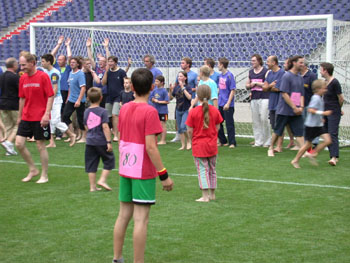

|
|
|
HM FYRIR ALLA – WM FÜR ALLE - WC FOR ALL
07.07.2006
Aufruf zur »HM FYRIR ALLA – WM FÜR ALLE - WC FOR ALL«
Hlynur Hallsson
Freitag 7.7.2006
Einlass ab 16.00 Uhr inklusive Bier- und Würstchenverkauf
Anpfiff 17.30 Uhr (Spielzeit: 2 x 30 min.)
Alle Hannoveraner und Gäste der Stadt sind eingeladen, an der von Hlynur Hallsson (IS) initiierten und von ART IG in Kooperation mit dem Kulturbüro Hannover und Hannover 96 veranstalteten »HM FYRIR ALLA – WM FÜR ALLE - WM FOR ALL«teilzunehmen.
Ob Barfuß im Regen oder bei schweißtreibender Sonne, dieses Spiel ist ein echtes Seitenwechsel – Highlight!
Einzige Voraussetzung für die Teilnahme ist eine temporäre Mitgliedschaft, die man ab 10,- € Spendeneinsatz zur Refinanzierung der Projektkosten des gesamten „Seitenwechsel“ bei ART IG oder im Kubus Hannover am Theodor-Lessing-Platz 2 erwerben kann. Die Vorlage des Mitgliedsausweises gewährt am 07.07.2006 ab 16:00 Uhr freien Einlass in die AWD-Arena. Aber auch vor Ort sind die dann noch verbliebenen Restbestände der auf 2000er.
Auflage limitierten Ausweise erhältlich.
|
Spielregeln?
Je nachdem, was der Kleiderschrank zu bieten hat, dürfen die Spieler/innen in roten oder blauen T-Shirts aufs Feld – und zwar A L L E !!!
Da bis zu 2000 Spieler auf dem Feld der Ehre um Tore kämpfen, wird der Schiedsrichter auf erhöhtem Posten vom Anstoßpunkt aus die Fouls pfeifen und per Megaphon seine Entscheidungen verkünden!
Es wird zwar mit den „ganz normalen Regeln“ gespielt, wie aber z.B. eine „Abseitsfalle“ aussehen oder wie der Schiedsrichter überhaupt alle seine Schäfchen im Auge behalten will, ist nicht klar. Was letztendlich dabei heraus kommt ist eine riesige Performance und ein Lustgewinn der ganz besonderen Art!
Mit diesem Seitenwechsel werden alle, die mitmachen, zu „echten“ WM– Spielern, denn die „realen“ Endspiele stehen am 07.07. (ansonsten ein spielfreier WM-Tag) noch aus.
Wer sich selbst als Tribünenhocker sieht oder als Linienrichter fungieren möchte, dem sei dies gewährt, denn auch hinter der Linie gibt es viel zu tun und die Tribüne wird geöffnet. Jedes temporäre Mitglied(zukünftige/r Spieler/in) darf gern Freunde und Familie mitbringen. Für Support und Logistik sorgt Herr Schnitzmeier, Stadionmanager Hannover 96!
www.seitenwechsel-hannover.de
|
|
 |
|
|
|
|
|
 |
|
|
|